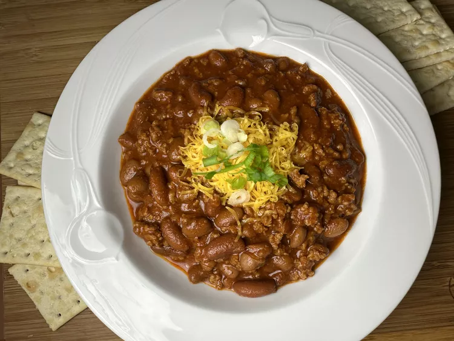

Chili

Description
This recipe will help you make chili.
Ingredients
1 pound lean ground beef
15 ounces tomato sauce
1 (15 ounce) can kidney beans, drained
1 (15 ounce) can chili beans, not drained
2 tablespoons chili powder, or to taste
salt and freshly ground black pepper to taste
Preparation
Heat a large skillet over medium-heat. Cook and stir ground beef in the skillet until browned and crumbly (5-7 minutes)
Stir in kidney beans, chili beans, and tomato sauce
Bring to a boil and stir in chili powder
Reduce heat to a simmer, and cook, stirring occasionally, until thickened, about 15 minutes
Season to taste with salt and pepper